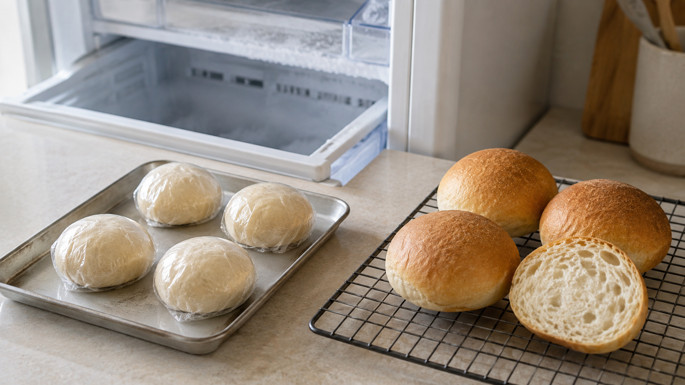

パン生地は発酵前に冷凍する。酵母は眠るが、全員は起きない
焼きたてのパンを朝に食べたい。
でも、粉を量って、こねて、二度発酵させるところから始めると、朝食には間に合わない。そこで前日に生地を作り、冷凍しておきたくなる。
ここで気になるのが、冷凍庫へ入れた酵母だ。
凍らせても、またパンを膨らませてくれるのだろうか。
今日の結論
冷凍したパン生地でも、解凍後に生き残った酵母は再び働く。ただし、冷凍は酵母を完全に保存する停止ボタンではない。一部の酵母は傷つき、生地の気泡を支える骨組みも弱くなる。
家庭でふくらみを残したいなら、まずはこねて成形した直後、発酵させる前に冷凍する。使う前夜に冷蔵庫へ移し、翌朝に室温で十分に膨らませてから焼く。
冷凍と解凍を繰り返さないことも大切だ。
焼きたてとまったく同じにはならない。それでも、「朝にこねる時間を省きたい」という目的なら、試す価値のある方法だ。
冷凍庫では、酵母が消えるのではなく動けなくなる
酵母は、糖を使って二酸化炭素を作る小さな生き物だ。このガスが生地の中にたまり、パンを膨らませる。
冷凍すると、水の動きがほぼ止まり、酵母も活発には働けなくなる。ところが、水が氷になる途中で、酵母の周囲に残った水は濃くなる。氷はほぼ水だけでできるため、塩や糖などが凍っていない部分へ押し出されるからだ。
細胞の内外で水が急に動き、膜が傷つく。この冷凍による傷を凍結障害という。
水を含んだ薄い袋を凍らせると、中の氷に押されて形が崩れるようなものだ。実際の酵母はもっと複雑だが、「低温そのもの」だけでなく、氷ができるときの水の移動が負担になる。
2014年のパン生地の研究では、凍結中に到達する温度が低くなるほど酵母の活動が落ち、焼いたパンの大きさや形にも悪影響が出た。傷ついた酵母から漏れた物質が、生地の骨組みを二次的に弱める可能性も示されている。
つまり、解凍しても動かない酵母がいる一方で、生き残った酵母は温度と水分が戻ると再びガスを作る。冷凍生地が膨らむかどうかは、ゼロか百かではなく、何割が働ける状態で戻るかで決まる。
発酵してから凍らせると、なぜ弱りやすいのか
「先に少し膨らませておけば、解凍後が楽そう」と考えたくなる。
ところが、古い研究では逆の結果が出ている。農林水産省の研究機関が1975年に行った試験では、発酵させずに冷凍した生地の酵母活性は12週間以上安定した。一方、数時間発酵させてから冷凍した生地では、1週間後に活性の60％以上が失われた。
研究者は、発酵中に生じた物質が共存すると、酵母の冷凍ダメージが強くなると考えた。
ただし、これは1975年の単一研究で、業務用の配合や冷凍条件を含む。今の家庭用冷凍庫で作るすべてのパンに「12週間大丈夫」と保証する数字ではない。
それでも、発酵前に冷凍する方法には理由がある。酵母が本格的に働き始める前に時間を止め、解凍後の発酵へ仕事を残しておくからだ。
生地の骨組みも、氷で少しずつ傷む
問題は酵母だけではない。
小麦粉と水をこねると、生地の中にガスを抱える網目ができる。この網目をグルテンという。風船のゴムのように、酵母が作ったガスを包み込む役目を持つ。
冷凍中に氷の結晶ができ、温度が上下すると結晶が育つ。その結果、網目は押されたり切れたりして、ガスを抱えにくくなる。
2022年の冷凍生地研究では、1〜90日の連続冷凍と、1〜4回の冷凍・解凍を比較した。どちらでもガスを作る力と抱える力は落ちたが、冷凍と解凍を繰り返した条件のほうが悪化が大きかった。
対象は発酵済みの蒸しパン用生地なので、家庭の丸パンと同じではない。それでも、使う分だけ小分けし、一度解凍した生地をまた凍らせないという判断は筋が通る。
電子レンジ解凍を急がない
冷凍生地を早く使いたいとき、電子レンジへ入れたくなる。
しかし、生地は水分の多い場所から先に温まる。外側はまだ冷たいのに、一部だけ熱くなれば、酵母とグルテンへ新しい負担がかかる。
2020年の解凍方法の比較では、冷蔵、室温、発酵器、電子レンジで冷凍パン生地を解凍した。冷蔵と室温で解凍した生地から焼いたパンは、電子レンジや発酵器の条件より体積が大きく、軟らかかった。パンの体積と生きた酵母数には強い関係も見られた。
これは特定の配合と機器による実験だ。家庭の電子レンジすべてが失敗するとは言えない。それでも、急がないなら冷蔵庫でゆっくり解凍するほうが、温度むらを避けやすい。
今日の実験：発酵前に冷凍する小さな丸パン
卵や牛乳を使わない、比較しやすい生地にする。四つのうち二つをその日に焼き、二つを冷凍すれば、冷凍による違いも分かる。
材料（小さめ4個分）
- 強力粉 250g
- 水 165g
- 砂糖 10g
- 塩 4g
- インスタントドライイースト 4g
- 植物油 10g
冷凍する日
- ボウルへ強力粉、砂糖、塩、イーストを入れる。塩とイーストは離して置く。
- 水と油を加え、粉気がなくなるまで混ぜる。
- 台の上で8〜10分こねる。表面がなめらかになり、薄く伸ばした生地に膜が見えたら止める。
- 発酵させず、すぐ4等分して丸める。
- 一つずつ油を薄く塗ったラップで包み、冷凍用袋へ入れる。日付を書き、平らな場所で冷凍する。
家庭用冷凍庫は扉の開閉で温度が揺れる。研究の保存期間をそのまま当てはめず、まずは1〜2週間以内に使い、膨らみ方を確かめる。これは安全期限ではなく、品質を比べるための保守的な目安だ。
焼く前夜から当日
- 焼く前夜、必要な個数を包んだまま冷蔵庫へ移し、8〜12時間かけて解凍する。
- 翌朝、オーブンシートへ並べ、乾かないように覆う。
- 20〜25℃程度の場所で、生地が見た目に1.5倍ほどになるまで待つ。目安は1〜3時間だが、時計より大きさを見る。冷凍で酵母が弱っていれば、もっとかかる。
- 200℃に予熱したオーブンで15〜18分、全体に焼き色が付き、底まで乾いた状態になるまで焼く。
- 網へ移し、少なくとも10分冷ます。
同じ日に焼く二個は、丸めたあと約1.5倍まで発酵させ、同じ温度と時間で焼く。高さ、重さ、断面の気泡、軟らかさを並べれば、「冷凍しても膨らむか」だけでなく、「どのくらい差が出たか」を見られる。
膨らまないときは、時間だけを責めない
解凍後に生地が動かない原因は一つではない。
- 冷凍前に発酵が進みすぎた
- 冷凍庫で長く保存した、または温度変化を繰り返した
- 解凍後の生地がまだ冷たい
- 酵母の力だけでなく、グルテンの網目も弱った
まず生地の中心まで解凍されているかを確かめ、乾燥を防ぎながら待つ。それでも3時間以上ほとんど膨らまなければ、酵母活性が大きく落ちた可能性がある。焼けば食べられる状態でも、軽い丸パンではなく、薄く伸ばした平焼きパンへ切り替えるほうが無理がない。
確実に作り置きしたいなら、専門ベーカリーの実務では「生地より、焼いて冷ましたパンを冷凍する」方法も勧められている。冷凍生地は便利だが、焼成済みパンほど結果が安定するとは限らない。
冷凍しても、生地は生の食品
冷凍は、原料についていた微生物をすべて殺す処理ではない。米国農務省は、冷凍は微生物の動きを止めるが、解凍後は再び活動できると案内している。
また、小麦粉は加熱済み食品ではない。米国食品医薬品局は、生の小麦粉や生地を味見せず、十分に焼き、手・器具・作業台を洗うよう注意している。膨らみを確かめるために生地を口へ入れない。
冷蔵庫で解凍したら、そのまま何日も置かず、発酵させて当日中に焼く。異臭、変色、ぬめりがあれば、焼いて取り戻そうとせず処分する。
明日の朝を楽にするなら、酵母の仕事を残して凍らせる
冷凍した酵母は、全員が元どおりになるわけではない。
だからこそ、発酵を終えてから凍らせるのではなく、こねた直後に小分けして冷凍し、解凍後に膨らむ時間を渡す。
まず半量だけ冷凍し、焼きたてと並べてみよう。冷凍は魔法の保存ではないが、酵母の戻り方を知れば、朝の作業を前日に移せる。
参考文献
- Tanaka Y, Miyatake M. Studies on the Injury of Yeast in Frozen Dough: Part I. Effect of pre-fermentation before freezing on the injury of yeast. 1975. https://doi.org/10.3136/nskkk1962.22.366
- Yamada S, Ogisu A, Hiraiwa T. Bread Dough Damage by Freezing (2nd Report: Effect of Minimum Achieved Temperature). 2014. https://doi.org/10.2963/jjtp.25.129
- Yang S, Jeong S, Lee S. Elucidation of rheological properties and baking performance of frozen doughs under different thawing conditions. Journal of Food Engineering. 2020;284:110084. https://doi.org/10.1016/j.jfoodeng.2020.110084
- Physicochemical and fermentation properties of pre-fermented frozen dough: Comparative study of frozen storage and freeze–thaw cycles. Food Hydrocolloids. 2022. https://doi.org/10.1016/j.foodhyd.2022.108253
- U.S. Department of Agriculture, Food Safety and Inspection Service. Freezing and Food Safety. https://www.fsis.usda.gov/food-safety/safe-food-handling-and-preparation/food-safety-basics/freezing-and-food-safety
- U.S. Food and Drug Administration. Handling Flour Safely: What You Need to Know. https://www.fda.gov/food/buy-store-serve-safe-food/handling-flour-safely-what-you-need-know
- King Arthur Baking. Can I freeze my yeast dough? https://www.kingarthurbaking.com/blog/2021/07/06/freeze-yeast-dough-make-ahead-bread
※本記事は家庭製パンの一般情報であり、業務用冷凍生地の品質保証を示すものではない。小麦にアレルギーがある人、またはグルテンを避ける必要がある人は、このレシピを使用しないこと。